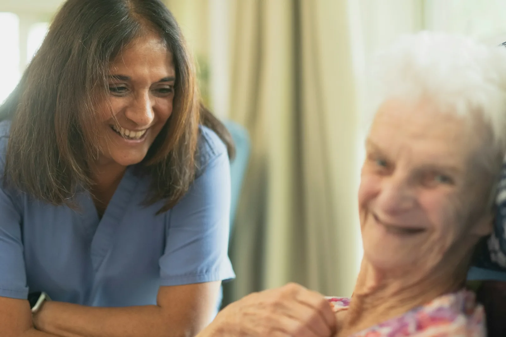
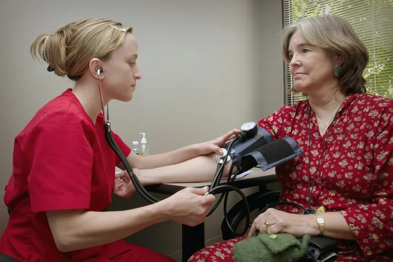
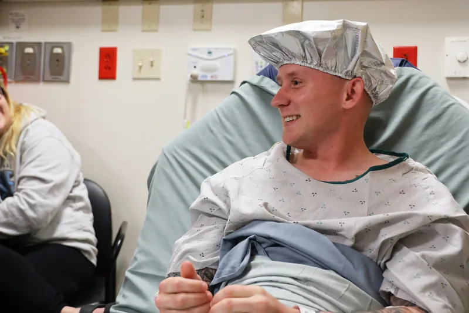
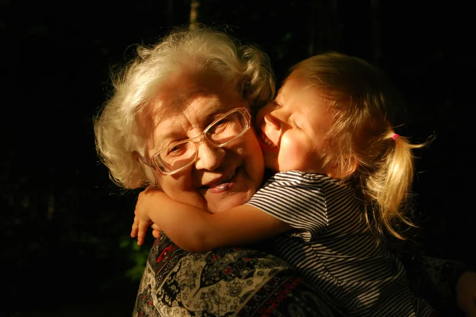
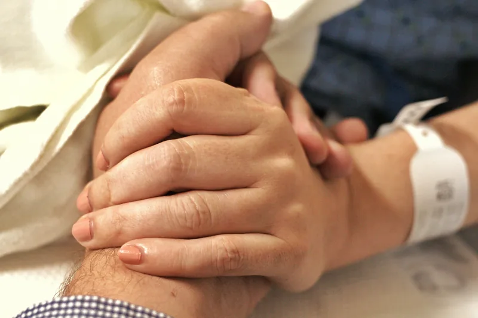

Step 1About 45 minutes
Meet your nephrologist
A relaxed conversation about your kidney health, your daily life and what matters most to you. Bring recent blood reports and your medicine list.

New to dialysis?
From your first conversation to your first session, a named nurse walks beside you. No jargon, no rush, and your family is always welcome.
Your first visit
Most people go from first call to first session in about a week. You can pause and ask questions at every step.
A relaxed conversation about your kidney health, your daily life and what matters most to you. Bring recent blood reports and your medicine list.

Blood tests, blood pressure, weight and heart checks, then a plan for your access: a fistula, a line or a peritoneal catheter.

Your first dialysis is usually shorter and gentler. Your primary nurse stays close, explains every sound and checks on you often.

Family support
Husbands, daughters, grandchildren and friends are part of your care. We explain the plan to them too, and teach them how to help without taking over.

Comfort, every session
Dialysis is a big part of your week. We make it as restful as we can, and we notice when something is not right before you have to ask.
Life on dialysis
Dialysis is only part of the picture. Our team helps you keep working, eating well, travelling and feeling like yourself.
Early, evening and overnight shifts, plus letters for your employer or college explaining what you need.
Explore overnight dialysisOur renal dietitian adapts your favourite Indian dishes for potassium, phosphate, salt and fluid.
See renal nutritionWe arrange guest sessions at other units and welcome visitors to Chennai and Bengaluru.
Plan travel dialysisLow mood and worry are common. Talk to our social worker or join the monthly patient and family circle.
Read patient guidesStarting out
Patients and a daughter look back on starting dialysis at Tidewell.
At seventy-two I thought dialysis meant the end of my independence. The class before I started answered every fear, and now I take the bus to my sessions on my own.
I was worried about my job. Grace trained me for home dialysis in seven weeks, and now I dialyse in the evenings and still work full time as an engineer.
The team treated my father as a person, not a patient. They called me after his first week just to see how we were both coping.
Ready when you are
A free 30-minute visit with a nurse: tour the unit, ask every question and bring someone you trust.